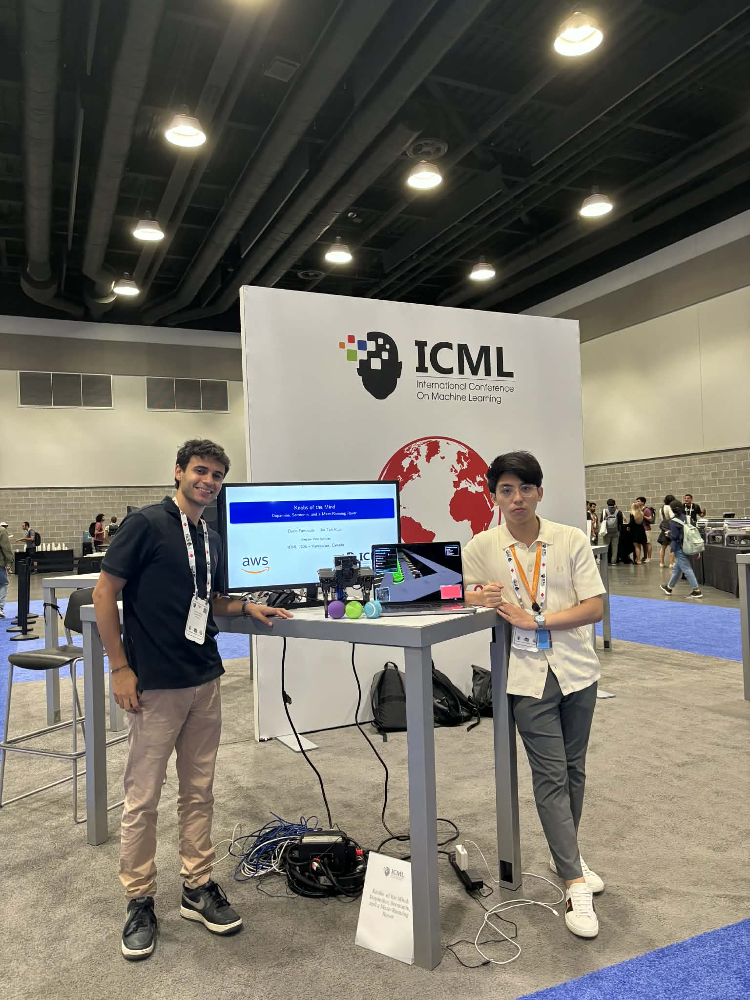

Abstract. Biology tunes behaviour on the fly through slow, low-bandwidth chemical broadcasts, a trick that most deep-RL agents still lack. We show that a standard convolutional actor-critic, left unmodified at the weight level, can nevertheless flex between impulsive reward harvesting and cautious hazard avoidance once it is endowed with three global scalars: a dopaminergic gain $k_{\text{DA}}$ that multiplies the temporal-difference error, and two serotonergic coefficients-$k^{\text{ent}}_{\text{5HT}}$ for entropy drive and $k^{\text{risk}}_{\text{5HT}}$ for threat discounting. These parameters span a continuous "computational mood" manifold sitting entirely outside the network proper, so switching policies is as cheap as writing to three floats.
Deep-RL agents routinely eclipse humans in games and benchmark suites, yet they fracture when the reward map or threat landscape changes. Brains handle such non-stationarity with ease: a handful of neuromodulators diffuse through wide swathes of cortex and subcortex, retuning synaptic plasticity and circuit excitability within seconds.
Dopamine and serotonin dominate laboratory studies of behavioural flexibility. Phasic dopamine bursts encode reward-prediction errors (RPEs) that drive reinforcement learning, while tonic levels track opportunity cost and motor vigour. Serotonin projects almost ubiquitously and shapes patience, harm avoidance, and uncertainty sensitivity. Crucially, the two systems often push in opposite directions-dopamine favours appetitive, high-gain choices; serotonin biases toward cautious exploration.
Research question. Can a fixed actor-critic agent, augmented only with three global scalars that mimic dopaminergic gain and serotonergic entropy- and risk-control, switch on demand between impulsive and cautious policies while remaining stable?
The triplet $\mathbf{k} = (k_{\text{DA}}, k^{\text{ent}}_{\text{5HT}}, k^{\text{risk}}_{\text{5HT}})$ defines a continuous, three-dimensional control surface:
Dopaminergic Gain ($k_{\text{DA}}$)
Multiplies the TD error $\delta_t$, scaling the learning signal for both critic and actor updates. Higher values accelerate learning but increase variance.
Serotonergic Entropy ($k^{\text{ent}}_{\text{5HT}}$)
Weights the policy entropy term in the actor objective, promoting wider action distributions and more exploratory behaviour.
Serotonergic Risk ($k^{\text{risk}}_{\text{5HT}}$)
Discounts rewards based on proximity to hazards via a danger signal $\rho(S_{t+1})$, creating "value valleys" around threats for cautious navigation.
Standard RL behaviour is approximated at $\mathbf{k} = (1, 0, 0)$. Because $\mathbf{k}$ is external to the network weights, the agent can alter its "computational mood" online by simply writing to these three scalar values.
Require: transition (S_t, A_t, R_{t+1}, S_{t+1})
Require: k = (k_DA, k_ent_5HT, k_risk_5HT)
Require: danger signal rho(.)
1: Serotonergic risk discount
R'_{t+1} = R_{t+1} - k_risk_5HT * rho(S_{t+1})
2: Temporal-difference error
delta_t = R'_{t+1} + gamma * V(S_{t+1}) - V(S_t)
3: Dopaminergic gain
delta'_t = k_DA * delta_t
4: Critic update
w = w + alpha_c * delta'_t * grad_w V(S_t)
5: Actor update (with entropy drive)
H_t = -sum_a pi(a|S_t) log pi(a|S_t)
theta = theta + alpha_a * [delta'_t * grad log pi(A_t|S_t) + k_ent_5HT * grad H_t]Pac-Mind
A 20x20 toroidal maze with pellets (+1), power-pellets (+10), four ghosts, and collision penalties (-100). The danger signal $\rho(S) = 1/(1+d)$ where $d$ is Manhattan distance to the nearest non-vulnerable ghost.
MiniHack HazardRooms
17x17 ASCII layouts with lava tiles (instant death), floor spikes (-10), and a goal amulet (+100). Binary danger signal: $\rho(S) = 1$ on hazard tiles, 0 otherwise.
The sweep spans $k_{\text{DA}} \in \{0.5, 1, 2, 4\}$, $k^{\text{ent}}_{\text{5HT}} \in \{0, 0.02, 0.05\}$, and $k^{\text{risk}}_{\text{5HT}} \in \{0, 0.2, 1\}$, yielding 36 distinct computational moods. Each configuration was trained for 50,000 episodes under five random seeds.
| Mood Setting | Mean Return | Collision % | Policy Entropy |
|---|---|---|---|
| Baseline (1, 0, 0) | 134 +/- 4 | 2.1% | 0.52 nats |
| High DA (4, 0, 0) | 155 +/- 5 | 4.2% | 0.48 nats |
| High 5-HT (1, 0.05, 1) | 124 +/- 3 | 0.7% | 0.86 nats |
| Mixed (4, 0.05, 1) | 142 +/- 4 | 1.8% | 0.66 nats |
The same three scalars transfer effectively to MiniHack HazardRooms without additional tuning:
| Mood (MiniHack) | Return | Death % | Episode Length |
|---|---|---|---|
| Baseline (1, 0, 0) | 94 +/- 3 | 4.1% | 1720 |
| High DA (4, 0, 0) | 116 +/- 4 | 12.3% | 1490 |
| High 5-HT (1, 0.05, 1) | 85 +/- 2 | 1.3% | 2370 |
Because the mood vector lives outside the network, behaviour can be rerouted on the fly by simply modifying three floats-no weight updates required. In experiments, switching from impulsive to cautious mood mid-episode produces observable behavioural changes within tens of steps.
Practical implications. A resource-constrained robot or game AI could switch between fast, risk-seeking modes and safe, methodical ones by writing three floats-orders of magnitude cheaper than fine-tuning or meta-gradient updates.
A single actor-critic network can shift from impulsive exploitation to cautious survival by modulating just three global scalars. The dopaminergic gain rescales the learning signal, while two serotonergic coefficients steer exploration and risk evaluation; together they define a low-dimensional manifold that continuously trades off performance against safety.
The result positions neuromodulation as a lightweight, interpretable alternative to heavyweight meta-learning, opening a path toward real-time policy control in safety-critical settings.

Doya, K. (2002). Metalearning and Neuromodulation. Neural Networks 15, 495-506.
Daw, N.D., Kakade, S.M., and Dayan, P. (2002). Opponent Interactions Between Serotonin and Dopamine. Neural Networks 15, 603-616.
Schultz, W., Dayan, P., and Montague, P.R. (1997). A Neural Substrate of Prediction and Reward. Science 275, 1593-1599.
Miconi, T. et al. (2018). Differentiable Plasticity: Training Plastic Neural Networks with Backpropagation. ICLR.
This page summarizes "Mood Swings: Three Neuromodulatory Scalars Drive Impulse-Caution Shifts in Deep Actor-Critic Agents" by Dario Fumarola and Jin Tan Ruan.